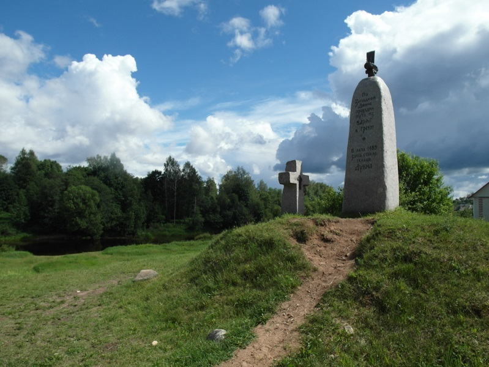

Андреаполь
Культура
Андреапольская земля известна доблестными солдатами, совершавшими в годы Великой Отечественной войны боевые подвиги. Одним из таких воинов был Алексей Михайлович Чупин, родившийся в селе Ляхово в 1913 году. Свой подвиг А.М. Чупин совершил при сооружении моста через Вислу в районе Седлещаны (Польша) под бомбёжками противника. При очередном налёте была разрушена часть настила моста. Чупин вместе с товарищами спас из воды 16 человек, сумел обеспечить переход через разбитый участок моста 70 пехотинцам, за что 23.09.1944 года был удостоен почётного звания «Герой Советского Союза».
Памятный камень
Предшественником Андреаполя был волостной центр Дубна, первое упоминание о котором относится к 1489-му году. Тогда по Западной Двине проходила граница между Псковской и Тверской губерниями, и Дубна находилась на Псковском берегу. Сегодня в центре города на берегу Западной Двины установлен симпатичный памятный камень по этому поводу. На камне - ладья, символ Андреаполя:
